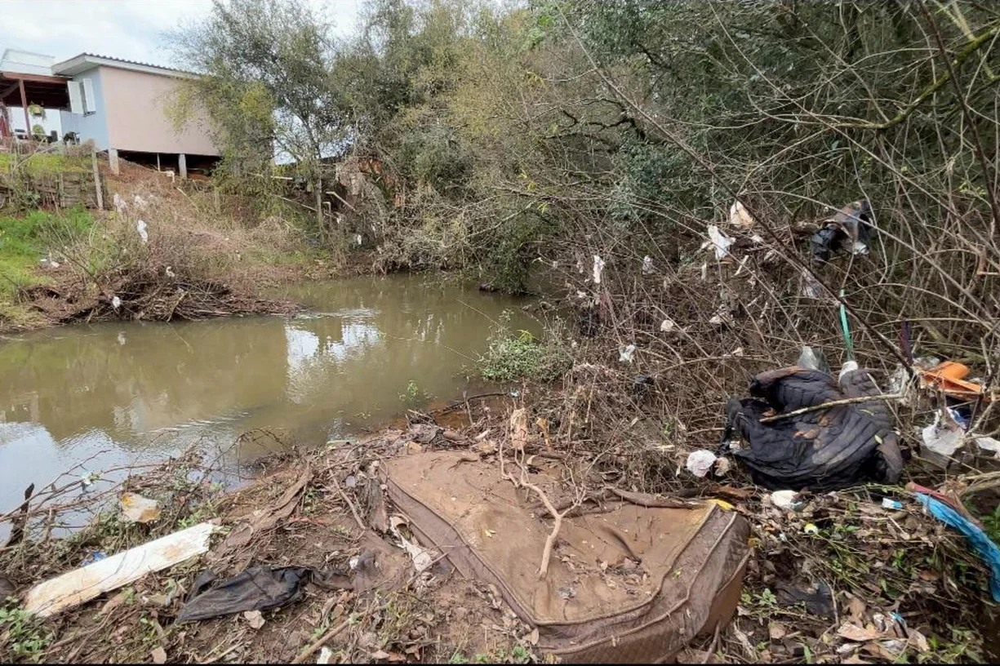
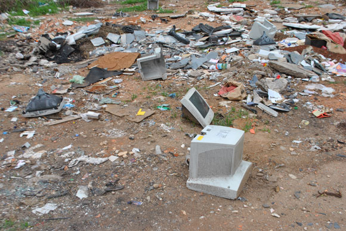
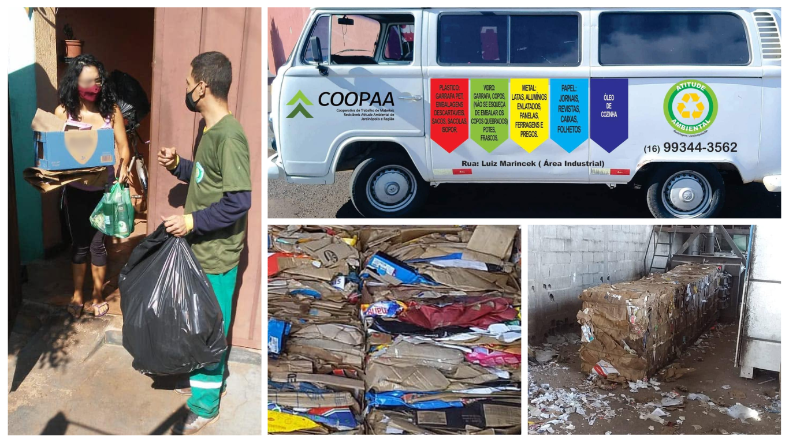

O que o lixo no lugar errado causa
Jogar um resíduo na rua parece pouco. Somado ao de milhares de pessoas, vira um problema de saúde, de dinheiro público e de meio ambiente. Veja o que acontece e o que você pode fazer.
Enchentes e bueiros entupidos
Plásticos, sacolas, entulho e móveis quebrados deixados na rua são levados pela chuva até as bocas de lobo e córregos. Com o bueiro entupido, a água não escoa e a rua alaga, levando mais lixo para dentro das casas e do comércio.
Quem paga a conta é a cidade toda: equipes e máquinas precisam ser usadas para desentupir e limpar, em vez de cuidar de outros serviços. Além do prejuízo, a água suja de enchente pode espalhar doenças como a leptospirose.

Dengue, ratos e escorpiões
O mosquito Aedes aegypti se reproduz em água parada, e basta uma pequena quantidade. Pneus, garrafas, latas e plásticos abandonados em terrenos baldios juntam água da chuva e viram criadouros. O Ministério da Saúde estima que cerca de 75% dos focos estão dentro dos domicílios, por isso o cuidado começa em casa [4].
Em 2024, o Brasil passou de 6,6 milhões de casos prováveis de dengue e chegou a cerca de 6 mil mortes, o maior número já registrado desde o início do monitoramento [4]. Montes de entulho também servem de abrigo para ratos, baratas e escorpiões, que acabam chegando às casas vizinhas.
Contaminação do solo e da água
Pilhas e baterias contêm metais pesados, como chumbo, cádmio e mercúrio. Em contato com a chuva e o solo, eles podem se infiltrar e chegar a rios e águas subterrâneas. Esses metais se acumulam nos seres vivos e fazem mal à saúde. Por isso a Resolução Conama 401/2008 manda que pilhas e baterias voltem aos fabricantes, e não ao lixo comum [7].
O óleo de cozinha usado também é um grande poluidor. Segundo a Sabesp, um litro de óleo descartado no ralo pode contaminar cerca de 25 mil litros de água [5]. Ele também gruda nas tubulações, entope o esgoto e encarece o tratamento da água.

Lixo eletrônico
O mundo gerou um recorde de 62 milhões de toneladas de lixo eletrônico em 2022, e só 22,3% foi documentado como coletado e reciclado corretamente [3]. Celulares, carregadores e computadores têm metais valiosos, como cobre, ouro e prata, mas também substâncias tóxicas, como chumbo e mercúrio.
Quando vão para o lixo comum, esses aparelhos desperdiçam recursos que poderiam voltar à indústria e poluem o solo. O relatório calcula que cerca de 62 bilhões de dólares em recursos recuperáveis deixaram de ser aproveitados [3].

Remédios vencidos
Jogados no lixo comum, na pia ou no vaso, os princípios ativos dos remédios chegam ao solo e à água, e o tratamento comum de esgoto nem sempre consegue removê-los. Também há risco de intoxicação de crianças, catadores e animais que encontrem os medicamentos.
O Decreto 10.388/2020 criou o sistema de logística reversa de medicamentos: farmácias e drogarias devem funcionar como pontos de descarte, aos poucos, começando pelas cidades maiores [6]. Em cidades menores, ligue antes e pergunte à sua farmácia ou unidade de saúde se recebe.
Lâmpadas fluorescentes
As lâmpadas fluorescentes contêm mercúrio, um metal muito tóxico. Quebradas no lixo comum, liberam vapor de mercúrio e contaminam o solo e quem trabalha na coleta. Desde o acordo setorial de 2015, existe um sistema de coleta com pontos de entrega em lojas, gerido pela Reciclus [8].
Reciclagem também é renda
Papel, plástico, vidro e metal voltam à indústria quando são separados corretamente. Apenas 8,7% do lixo urbano brasileiro foi reciclado em 2024 [2], e boa parte do material recuperado vem do trabalho de catadores e cooperativas.
Cada embalagem limpa e separada ajuda esses trabalhadores a gerar renda e evita extrair mais recursos da natureza. Misturar recicláveis com restos de comida os estraga e eles viram rejeito.

O que diz a lei
A Política Nacional de Resíduos Sólidos (Lei 12.305/2010) define que a responsabilidade é compartilhada: governo, empresas e cidadãos têm deveres. Ela prevê a logística reversa para pilhas, baterias, eletrônicos, lâmpadas, óleos lubrificantes, pneus e medicamentos, em que quem fabrica e vende deve receber o produto de volta [1]. O descarte irregular também pode render multa.
Mitos e verdades
“Uma pilha só não faz mal”
Mito. Uma pilha parece pouco, mas milhares de pessoas descartando uma por vez somam uma quantidade grande de metais pesados no solo.
“Óleo de cozinha pode ir para o ralo se eu abrir a torneira com água quente”
Mito. A água quente só empurra o óleo para frente. Ele esfria e gruda na tubulação do esgoto.
“Lixo na rua é problema da prefeitura”
Mito. A lei divide a responsabilidade com todos nós. Quem joga lixo na rua gera custo e risco para os vizinhos e para a própria família.
“Reciclar não adianta porque tudo vai para o mesmo caminhão”
Depende. Onde há coleta seletiva e cooperativa, o material separado é encaminhado à reciclagem. Por isso vale usar os pontos de entrega e as cooperativas.
Faça a sua parte
- Guarde pilhas, lâmpadas e remédios vencidos em casa até levar ao ponto certo.
- Junte o óleo de cozinha usado em uma garrafa PET e leve a um ponto de coleta.
- Separe os recicláveis limpos e secos.
- Não deixe móveis e entulho na calçada nem em terrenos.
- Esvazie recipientes que acumulam água parada.
- Compartilhe este site com a sua família e os seus vizinhos.
As fontes numeradas estão em Sobre o projeto. Dados podem ser atualizados pelas instituições.